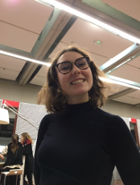

Roxane 🍣
Salut ! Je m'appelle Roxane Weben! Je suis en première année à l'IESEG, je pratique du rugby dans l'équipe de mon école, et je suis aussi aux scouts depuis toute petite. J'ai aussi une grande passion pour les sushis.
Le scoutisme☘
Les Scouts de France sont une réelle famille! C'est un groupe incroyable, bien qu'il en existe d'autres, je reste persuadée que les valeurs que nous voulons transmettre nous sont propres. J'y suis depuis mes 10 ans et je ne compte pas m'arrêter d'ici tôt.
Le rugby🏈
J'ai toujours beaucoup apprécié les sports collectifs et la bagarre. Le rugby me semblait être le parfait compromis pour allier les deux. C'est pourquoi j'ai décidé d'intégrer cette année l'équipe féminine de rugby de l'IESEG!
Mes Réseaux